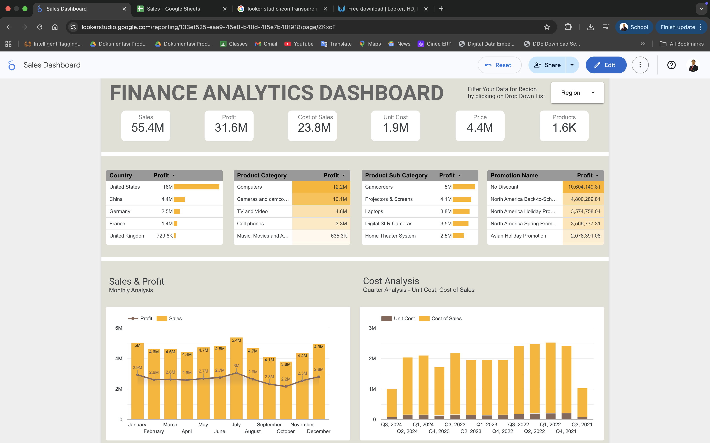
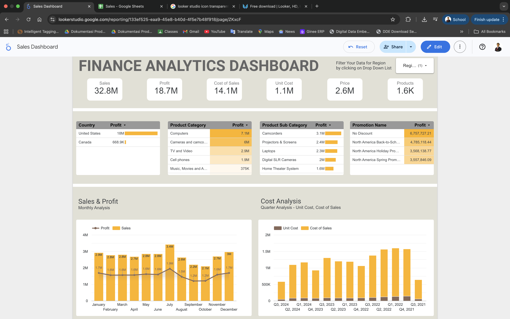

monitoring Modul 04 • Panduan Visual Step-by-Step
Dashboard Sales Enterprise
Tutorial Praktik Komprehensif Membangun Dashboard Penjualan Multidimensi di Google Looker Studio dengan Dokumentasi Tangkapan Layar Lengkap.
Penyusun Modul
Hartanto Tantriawan, S.Kom., M.Kom.
Fokus Studi
Looker Studio Sales Analytics
Fitur Enterprise
Scorecards, Multi-Table, Charts & Filters
Target Capaian
Preview Dashboard Sales yang Akan Dibuat
Hasil akhir dashboard penjualan mencakup KPI scorecards, multi-tabel analitis, stacked bar chart, dan kontrol filter dinamis.

Arsitektur Produksi
7 Tahapan Membangun Dashboard Sales
Alur kerja terstruktur yang dirancang oleh instruktur HTA untuk menghasilkan dashboard berkelas industri.
1
Import Data
Koneksi dataset Google Sheets ke Looker Studio.
2
Customize Background
Warna background, ukuran kanvas, dan header report.
3
Scorecards
Metrik KPI ringkasan eksekutif (Sales, Profit, Qty).
4
Create Table
Tabel analitis kategori produk & efektivitas promosi.
5
Create Chart
Visualisasi Stacked Bar tren produk & wilayah.
6
Filter
Dropdown filter interaktif wilayah (Region).
7
Sharing & Embed
Embed kode iframe ke web portal & presentasi.
Tahap 1 • Langkah 01
Mengakses Portal Google Looker Studio
Buka peramban (browser) dan akses alamat resmi:
https://lookerstudio.google.com/navigation/reporting
- Pastikan akun Google Anda aktif dan terautentikasi.
- Tampilan beranda menampilkan repositori laporan dan menu pembuatan laporan baru.
Tahap 1 • Langkah 02
Membuat Laporan Kosong Baru
- Klik menu Blank report (+ tanda tambah) untuk membuka lembar kerja kosong.
- Sistem akan menginisiasi kanvas laporan baru dan otomatis membuka dialog koneksi data.
Looker Studio bekerja secara *cloud-native*, sehingga seluruh perubahan kanvas tersimpan secara otomatis di Google Drive.
Tahap 1 • Langkah 03
Memilih Konektor Google Sheets
Pada jendela "Add data to report":
- Pilih opsi konektor Google Sheets di baris Google Connectors.
- Konektor ini memungkinkan Looker Studio membaca data penjualan secara dinamis dan sinkron.
Tahap 1 • Langkah 04
Verifikasi Sumber Data di Google Sheets
Pastikan file data penjualan telah terbuka di Google Sheets:
https://docs.google.com/spreadsheets
- Periksa kelengkapan kolom:
Order_Date, Region, Product_Category, Product_Sub_Category, Promotion_Name, Sales_Amount, Profit, Quantity.
- Pastikan baris pertama adalah judul kolom (*headers*).
Tahap 1 • Langkah 05
Menambahkan Spreadsheet ke Laporan
- Pilih nama file spreadsheet dataset penjualan dari daftar file terbaru.
- Pilih worksheet yang berisi tabel transaksi penjualan.
- Pastikan centang "Use first row as headers" aktif.
- Klik tombol biru Add di pojok kanan bawah.
Tahap 2 • Langkah 06
Menyiapkan Kanvas & Hapus Tabel Bawaan
Setelah data terhubung ke kanvas:
- Looker Studio secara otomatis meletakkan tabel bawaan acak.
- Klik pada tabel bawaan tersebut dan tekan tombol Delete untuk mengosongkan kanvas.
- Di bilah kanan terlihat panel Data yang memuat semua kolom dataset.
Tahap 2 • Langkah 07
Mengatur Theme and Layout Kanvas
- Klik menu Theme and Layout pada toolbar kanan atas.
- Pada tab Layout, atur Display Mode: Fit to width dan Canvas Size: 16:9 Landscape.
- Pada tab Theme, pilih warna latar belakang lembut untuk kenyamanan membaca data.
Tahap 2 • Langkah 08
Mendesain Header Banner Dashboard
Membangun struktur visual header laporan:
- Gunakan menu Insert → Rectangle untuk membuat kotak pita header di bagian paling atas kanvas.
- Tambahkan teks judul laporan: SALES PERFORMANCE DASHBOARD.
- Sediakan area di sisi kanan header untuk penempatan kontrol filter wilayah.
Tahap 3 • Langkah 09
Menambahkan Komponen Scorecard Pertama
Scorecard berfungsi menyajikan angka metrik ringkasan eksekutif secara instan:
- Klik menu Add a chart di toolbar atas.
- Pilih ikon Scorecard.
- Letakkan scorecard pertama di bawah kotak header laporan.
Tahap 3 • Langkah 10
Menempatkan Scorecard di Sisi Kiri
Atur ukuran dan posisi scorecard:
- Posisikan di area kiri atas untuk menjadi indikator KPI utama pertama: Total Sales.
- Scorecard akan memuat metrik default dari dataset secara otomatis.
Tahap 3 • Langkah 11
Setup Metrik Scorecard 1: Total Sales
Pada panel Setup di bilah kanan:
- Tarik kolom
Sales_Amount (atau Sales) ke dalam slot Metric.
- Pastikan agregasi diset ke SUM.
- Ubah nama label metrik menjadi "Total Sales".
Tahap 3 • Langkah 12
Kustomisasi Style & Format Angka Scorecard
Buka tab Style pada panel kanan:
- Centang opsi "Compact numbers" jika nominal mencapai angka jutaan/miliaran.
- Atur perataan teks (Alignment) ke Center.
- Beri warna background kartu putih bersih dengan radius border 10px.
Tahap 3 • Langkah 13
Duplikasi & Setup Scorecard 2: Total Profit
Cara cepat membuat scorecard dengan style seragam:
- Salin Scorecard 1 dengan tombol Ctrl+C lalu tempel Ctrl+V.
- Letakkan di sebelah kanan Scorecard 1.
- Ganti metriknya menjadi
Profit (Agregasi: SUM).
Tahap 3 • Langkah 14
Menambahkan Scorecard 3: Total Quantity
Menampilkan total unit produk yang berhasil terjual:
- Duplikasi scorecard berikutnya ke sisi kanan.
- Ganti metrik menjadi
Quantity (Agregasi: SUM).
- Ubah label menjadi "Total Quantity".
Tahap 3 • Langkah 15
Menyelaraskan 4 Scorecards KPI di Kanvas
Tahap 3 Selesai: 4 kartu KPI (Total Sales, Total Profit, Total Quantity, dan KPI Margin/Transaksi) kini tertata rapi dan simetris di bagian atas kanvas.
Gunakan fitur Arrange → Distribute Horizontally untuk jarak antar kartu yang sempurna.
Tahap 4 • Langkah 16
Menambahkan Komponen Table Analitis
Tabel menyajikan rincian data multidimensi secara terperinci:
- Klik menu Add a chart di toolbar atas.
- Pilih komponen Table.
- Posisikan di bawah jajaran Scorecards.
Tahap 4 • Langkah 17
Setup Tabel 1: Kategori Produk & Metrik
Konfigurasi data pada panel Setup:
- Dimension:
Product_Category.
- Metrics:
Sales_Amount dan Profit.
- Sort: Berdasarkan
Sales_Amount Descending.
Tahap 4 • Langkah 18
Aturan Style Tabel: Matikan Row Numbers
notes
Catatan Modul: "Matikan Row Numbers"
Kolom nomor urut baris (1, 2, 3...) memakan ruang horizontal kanvas:
- Buka tab Style pada tabel.
- Hilangkan centang pada opsi "Show row numbers".
Tahap 4 • Langkah 19
Matikan Pagination: Tampilkan Top 5 / Top 8
notes
Catatan Modul: "Set off pagination, use Top 8 data or Top 5"
- Di tab Style bagian Table Footer, nonaktifkan pagination.
- Di tab Setup, batasi Rows per page ke 5 atau 8 data teratas.
- Tabel menjadi ringkas dan tidak memunculkan kontrol halaman berlebih.
Tahap 4 • Langkah 20
Modifikasi Visual Style Tabel
notes
Catatan Modul: "Modif Style Table"
- Ubah tampilan kolom metrik menjadi Bar / Heatmap visual di tab Style.
- Atur warna header tabel dan aktifkan garis pembatas yang rapi.
Tahap 4 • Langkah 21
Tabel Sub Category & Promotion Name
notes
Catatan Modul: "Perubahan data Product Sub Category pada tabel tiga , dan Promotion Name pada tabel 4."
- Tabel 2/3: Ganti dimensi menjadi
Product_Sub_Category.
- Tabel 4: Ganti dimensi menjadi
Promotion_Name.
- Susun tabel berdampingan untuk analisis komparatif.
Tahap 5 • Langkah 22
Menambahkan Grafik Batang (Bar Chart)
Visualisasi grafik untuk membandingkan proporsi kategori:
- Klik menu Add a chart.
- Pilih Bar Chart / Column Chart.
- Tempatkan di sisi kanan tabel analitis.
Tahap 5 • Langkah 23
Setup Dimensi Sumbu & Breakdown Kategori
Konfigurasi pada panel Setup:
- Dimension:
Region atau Order_Date (Bulan).
- Breakdown Dimension: Masukkan
Product_Category.
- Metric:
Sales_Amount (SUM).
Tahap 5 • Langkah 24
Mengaktifkan Fitur Stacked Bar Chart
notes
Catatan Modul: "Aktifkan Stacked Bar"
Mengubah balok yang berdampingan menjadi balok bertumpuk:
- Buka tab Style pada chart.
- Centang opsi "Stacked bars".
- Batang kategori produk kini bertumpuk rapi memperlihatkan total omzet gabungan per segmen.
Tahap 5 • Langkah 25
Mematikan Legenda di Sebelah Kiri
notes
Catatan Modul: "Matikan legenda di sebelah kiri"
- Legenda di sebelah kiri mempersempit lebar grafik secara signifikan.
- Pindahkan posisi Legend ke Top (Atas) atau None agar grafik dapat melebar optimal.
Tahap 5 • Langkah 26
Menambahkan Grafik Tren Pendamping
Melengkapi analisis visual dengan tren runtun waktu:
- Tambahkan grafik garis tren penjualan bulanan di bawah stacked bar chart.
- Atur dimensi tanggal bulanan dan metrik laba/omzet.
- Beri border dan sudut membulat yang selaras.
Tahap 6 • Langkah 27
Menambahkan Kontrol Filter Drop-Down List
Menjadikan dashboard interaktif dengan kontrol penyaring data:
- Klik menu Add a control di toolbar atas.
- Pilih opsi Drop-down list.
- Letakkan di sudut kanan atas sejajar dengan pita Header.
Tahap 6 • Langkah 28 (Poin Kritis)
Ganti Control Field Region & Hapus Metric Price
error
Catatan Modul: "Ganti Control Field dengan Region, dan Hapus Metric (Price) nya ."
- Control Field: Ganti menjadi kolom
Region.
- Metric: Klik tombol silang (x) untuk menghapus metrik dari filter agar dropdown murni menampilkan daftar nama wilayah tanpa angka harga.
Tahap 6 • Langkah 29
Menambahkan Date Range Controller
Memberikan fleksibilitas filter waktu:
- Pilih menu Add a control → Date range control.
- Posisikan berdampingan dengan filter Region di header.
- Pengguna dapat menyaring data berdasarkan kuartal, tahun, atau tanggal kustom.
Tahap 6 • Langkah 30
Uji Coba Interaktivitas Filter Wilayah
Klik tombol View di pojok kanan atas untuk mencoba dashboard:
- Pilih salah satu wilayah (misal: Central atau West).
- Seluruh Scorecard KPI, Tabel Produk, dan Stacked Bar Chart akan otomatis memperbarui nilainya secara real-time!
Tahap 7 • Langkah 31
Mengambil Kode Embed Iframe di Looker Studio
- Klik menu File → Embed report di Looker Studio.
- Centang kotak "Enable embedding".
- Pilih opsi Embed Code untuk menghasilkan tag HTML
<iframe>.
- Salin kode tersebut untuk disematkan di web atau materi presentasi.
Final Masterpiece
Tampilan Penuh Dashboard Sales Enterprise
Dashboard terintegrasi siap produksi: 4 KPI Scorecards, Multi-Tabel Analitis, Stacked Bar Chart, dan Kontrol Filter Region.

Slide 61 • Live Embed
Live Preview: Dashboard Sales Interaktif
Laporan Google Looker Studio resmi yang disematkan langsung menggunakan kode iframe dari modul HTA.
Kesimpulan Masterclass
Rangkuman 4 Modul Penguasaan Data Analyst
Integrasi kurikulum lengkap dari fondasi analisis data hingga implementasi Business Intelligence.
Modul 1: Pengenalan
Standar SKKNI, identifikasi kebutuhan bisnis, SMART framework, dan dimensi 5W+1H.
Modul 2: Understanding
Objek data, fakta vs dimensi, profiling statistik, imputasi missing values, dan EDA visual.
Modul 3: Warmindo
Studi kasus F&B: tren omzet bulanan, top 5 menu laris, dan donat jenis pemesanan.
Modul 4: Sales BI
Enterprise dashboard: scorecards KPI, multi-tabel, stacked bar, filter region, & iframe embed.
workspace_premium
Selamat! Anda telah menyelesaikan seluruh panduan visual pembuatan dashboard data analyst berstandar industri!
military_tech
Sesi Diskusi, Evaluasi & Penutup
Terima kasih telah mengikuti seluruh rangkaian pelatihan Data Analyst Masterclass. Silakan ajukan pertanyaan penutup atau konsultasikan proyek portofolio Anda.
Hartanto Tantriawan, S.Kom., M.Kom.
hartanto.tantriawan@if.itera.ac.id